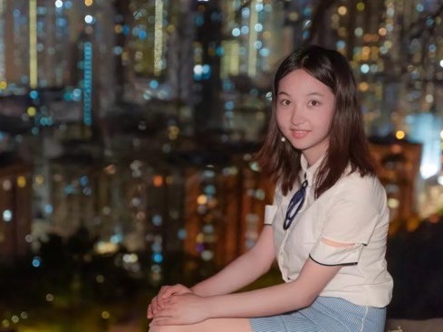
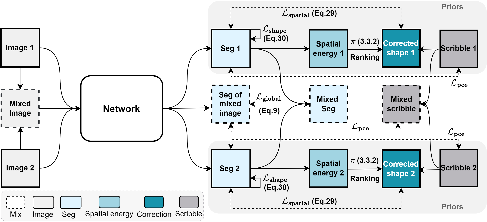
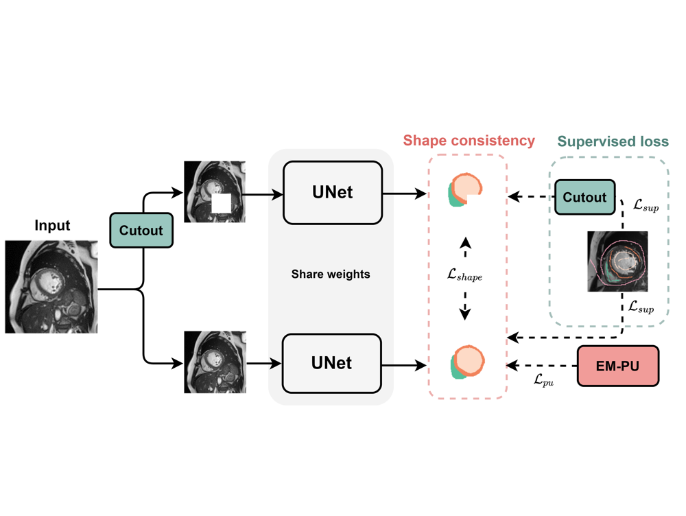
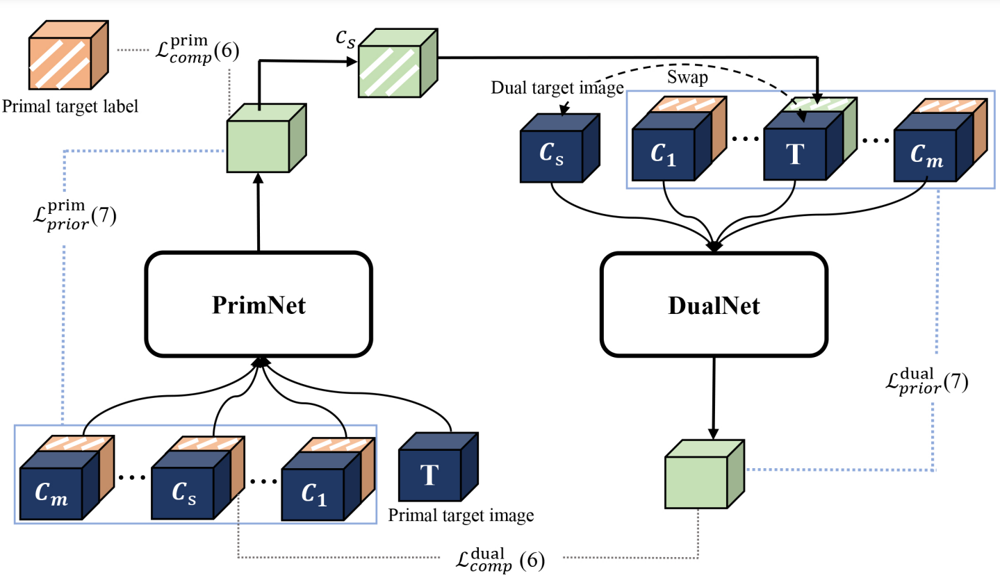

Applied sciences group
Medical imaging team
Medical imaging team
Golang cloud service
Empirical study

Deloitte AI Institute
Digital Center
|  |
Github | Linkedin | Google Scholar Research interests: Computer Vision, AI in Healthcare, Medical Image Analysis Ke Zhang is a ECE PhD student at Johns Hopkins University, advised by Prof. Vishal Patel. Previously, she obtained her Master degree from ZMIC Lab at School of Data Science, Fudan University, advised by Prof. Xiahai Zhuang. She obtained her B.S. from the School of Data Science, Fudan University. She interned at Microsoft Research, Sensetime, and PAII Inc. |
One paper early accepted by MICCAI 2024 (^ ^).
 |
|
|  |
|
|  |
|
 |
|
|  |
|
IEEE Transactions on Pattern Analysis and Machine Intelligence (TPAMI)
Medical Image Analysis (MedIA)
IEEE Transactions on Medical Imaging (TMI)
International Conference on Machine Learning (ICML)
Conference on Neural Information Processing Systems (NeurIPS)
International Conference on Learning Representations (ICLR)
Computer Vision and Pattern Recognition Conference (CVPR)
International Conference on Computer Vision (ICCV)
European Conference on Computer Vision (ECCV)
International Conference on Medical Image Computing and Computer Assisted Intervention (MICCAI)
Academic Star Award of Fudan University, 2023
Excellent Graduate Award of Shanghai, 2023
China National Scholarship, 2022
FUDAN DATA130043, Spring 2023, Medical Image Processing.
FUDAN DATA130044, Autumn 2022, Multivariate Statistical Analysis.
FUDAN DATA130043, Spring 2022, Medical Image Processing.
FUDAN DATA130049, Autumn 2020, Image Processing and Visualization.
FUDAN DATA620018, Spring 2020, Data Visualization.
I am lucky to have been able to intern in several excellent institutions. I have worked on data analysis, empirical study, back-end development, etc.
Now I focus on the research of medical imaging and feel glad to be engaged in the challenging field of AI in healthcare.
Applied sciences group
Medical imaging team
Medical imaging team
Golang cloud service
Empirical study
Deloitte AI Institute
Digital Center